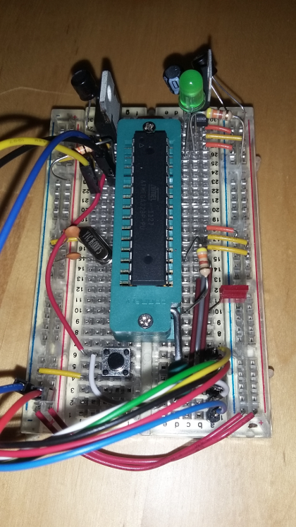

Breadboard Arduino
Ich habe endlich (es wird abends recht bald dunkel) das schon lange angepeilte Vorhaben durchgezogen - meinen eigenen Arduino auf einem Breadboard aufzubauen
Dazu habe ich auf diverse Anleitungen aus dem Internet zurückgegriffen - namentlich diese und diese hier. Nachdem ich alles soweit aufgebaut hatte, habe ich versuchen wollen, ein Programm hochzuladen und bin kläglich gescheitert.
Das lag im großen und ganzen am Lehrsatz: "There is no place for truth on the internet!" oder alternativ seiner ersten Ableitung: "Was immer man im Internet findet enthält mindestens einen Fehler oder eine grobe Auslassung."
Der Arduino lässt sich über zwei Mechaniken in place programmieren: zum einen (mit dem richtigen Bootloader) über die serielle Schnittstelle oder über SPI. Beides schlug in meinem Fall fehl. Die serielle Schnittstelle deshalb, weil die Verschaltung des DTR-Pins nicht angegeben war - ich musste dies erst mühsam im Internet finden (hätte natürlich auch den Original-Schaltplan zu Rate ziehen können...) Das war die Auslassung. Kommen wir nun zum Fehler: In den Anleitungen ist im Text genau beschrieben, über welche Pins die SPI-Schnittstelle abgebildet wird. Ich habe den nur überflogen und mich an das danebenstehende Bild gehalten. Dort waren die Drähte auf dem Breadboard aber falsch gesteckt. Ich übertrug den Fehler und wunderte mich, warum ich weder mittels USBTinyISP programmieren, noch mit einer per SPI angeschlossenen SD-Karte kommunizieren konnte.
Nachdem diese Stolpersteine alle ausgeräumt waren habe ich nun einen Arduino, der
- per serieller Schnittstelle programmiert werden kann
- per SPI programmiert werden kann
- aus 12V geregelte 5V zur Verfügung stellt
- aus 12V geregelte 3,3V zur Verfügung stellt

Breadboard-Arduino Testaufbau Leicht zu erkennen die beiden Spannungsversorgungen ganz oben: links für 3,3V - rechts für 5V. Auf der linken Seite darunter findet man die Anschlüsse der seriellen Schnittstelle, auf der Rechten die Power-LED (zeigt die Verfügbarkeit des 5V-"Bordnetzes" an). Darunter findet man auf der linken Seite die Takterzeugung und unterhalb des Sockels den Reset-Knopf. Ganz rechts unten sieht man die herausgeführten Pins der SPi-Schnittstelle, an denen gerade das Adapterkabel zum USBTinyISP angeschlossen ist. Ein wenig darüber findet man die ominöse "Pin-13-LED", die auf keinem Arduino-Klon, der auf sich hält, fehlen darf.Links
Better SPI Bus Design in 3 Steps
Do-it-Yourself-Projekt: iXduino – Arduino on a Breadboard
Building an Arduino on a Breadboard
Raspberry Pi LCD Display: 16×2 Zeichen anzeigen (HD44780)
New LiquidCrystal / schematics
LcdBarGraph Library for Arduino
GPS Shield
Tags
Android Basteln C und C++ Chaos Datenbanken Docker dWb+ ESP Wifi Garten Geo Git(lab|hub) Go GUI Hardware Java Jupyter Komponenten Links Linux Markup Music Numerik PKI-X.509-CA Python QBrowser Rants Raspi Revisited Security Software-Test sQLshell TeleGrafana Verschiedenes Video Virtualisierung Windows Upcoming...


Neueste Artikel
-
 Raspi booten übers Netz mit PXE und NFS
Raspi booten übers Netz mit PXE und NFS
Nach meinen Experimenten mit einem Rock64 war ein Raspi 3B+ für Experimente freigeworden - und in Vorbereitung meiner durch eben diesem Rock64 inspirierten Projektideen für diesen Winter wollte ich einiges ausprobieren - zuerst das Booten über das Netzwerk mit persistentem Speicher im Netz - so dass am Pi gar kein Massenspeicher mehr benötigt würde - weder als SD-Karte noch sonstwie.
Weiterlesen... -
 Excel? Nein - AWK und Gnuplot!
Excel? Nein - AWK und Gnuplot!
Nachdem ich neulich ein Video zum Thema AWK gefunden hatte habe ich gedacht - da geht noch mehr
Weiterlesen... -
Günstiges Arm64-Board mit Raspi-Formfaktor
Ich habe ein neues Gerät in meinem Hardware-Zoo: Nachdem ich bereits einigeErfahrungen mit Raspis sammeln konnte, machte mich ein Kollege neulich auf eine günstige Variante aufmerksam, Erfahrungen mit ARM64 zu sammeln...
Weiterlesen...
Manche nennen es Blog, manche Web-Seite - ich schreibe hier hin und wieder über meine Erlebnisse, Rückschläge und Erleuchtungen bei meinen Hobbies.
Wer daran teilhaben und eventuell sogar davon profitieren möchte, muß damit leben, daß ich hin und wieder kleine Ausflüge in Bereiche mache, die nichts mit IT, Administration oder Softwareentwicklung zu tun haben.
Ich wünsche allen Lesern viel Spaß und hin und wieder einen kleinen AHA!-Effekt...
PS: Meine öffentlichen GitHub-Repositories findet man hier.